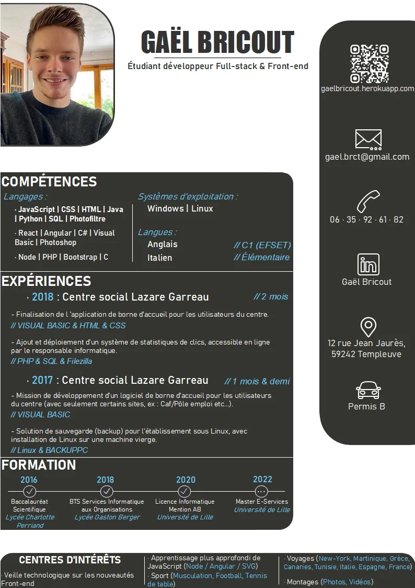

<div id="container-footer">
  <div id="container-titre-footer">
    <h1 id="footer-pres">En savoir plus</h1>

  </div>
  <div id="container-all-footer">
    <div id="container-cv" class="content-footer">

      <div id="titreContenu">
          Pour voir mon CV :
      </div>
      <div id="contenuExperience">
        <div id="voirPDF" class="btn">Voir mon CV</div>
      </div>
      <div id="contenuExperience">
        <a href="../../../assets/img/BRICOUT_GAEL_cv_pdf.pdf" id="linkExp" download='BRICOUT_GAEL_CV.pdf' class="btn">Télécharger le PDF</a>
      </div>


    </div>
    <div class="content-footer" id="readme"> Ce portfolio est réalisé exclusivement dans le but de m'entrainer,
      et d'apprendre de nouveaux langages. Il s'agit là d'un site qui me sert d'outil avant tout,
       qui est donc largement susceptible de changer et d'être modifié.
      <br>
      Il a été réalisé entièrement en JS(Angular)/HTML/CSS.
      <br>
      J'étudie en ce moment, de manière autodidacte, les solutions d'optimisation de mon site.
      La prochaine étape est l'apprentissage de NodeJS, pour créer une section d'envoi de mail dans "contact".
    </div>
  </div>


</div>
<div class="modal" id="modalCV">

  <div class="modal-content">
    <svg version="1.1" xmlns="http://www.w3.org/2000/svg" xmlns:xlink="http://www.w3.org/1999/xlink" preserveAspectRatio="xMidYMid meet" viewBox="299 278.18999999999994 44 44.81000000000006" width="40" height="40.81" class="closemodal">
      <defs>
        <path d="M340 299.59C340 310.86 331.04 320 320 320C308.96 320 300 310.86 300 299.59C300 288.33 308.96 279.19 320 279.19C331.04 279.19 340 288.33 340 299.59Z" id="a1YEJ38yly"></path>
        <path d="M323.23 299.59L329 305.36L325.77 308.6L320 302.83L314.23 308.6L311 305.36L316.77 299.59L311 293.83L314.23 290.59L320 296.36L325.77 290.59L329 293.83L323.23 299.59Z" id="bamjXEzU20"></path>
      </defs>
      <g><g>
        <use xlink:href="#a1YEJ38yly" opacity="1" fill="#0e3d02" fill-opacity="0"></use>
        <g><use xlink:href="#a1YEJ38yly" opacity="1" fill-opacity="0" stroke="#800000" stroke-width="2" stroke-opacity="1" class="close-modal-circle"></use></g>
      </g><g>
        <use xlink:href="#bamjXEzU20" opacity="1" fill="#800000" fill-opacity="1" class="close-modal-cross"></use></g></g>
      </svg>

    
  </div>

</div>
